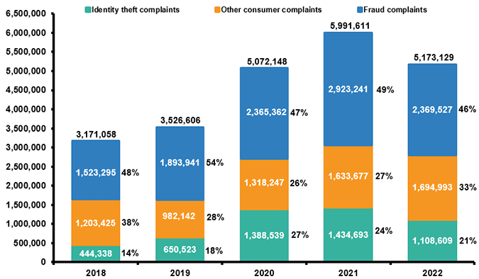

Global takedown of cybercriminals behind malware operation
Law enforcement agencies in the United States and Europe say they've taken down a major online marketplace for stolen login credentials.
abc News
Want to learn more?
According to a report by RiskBased Security, in the first half of 2021, there were over 18 billion records exposed in 1,767 publicly reported data breaches globally. That's equivalent to around 94 million records being compromised every day, or over 1,000 records being breached every second!
.png) Young people are at a higher risk of being affected by identity theft and other forms of data breaches due to their frequent use of social media and online platforms. It is important for teens and their parents to take steps to protect their personal information online and monitor their digital footprints to avoid becoming victims of cybercrime.
Young people are at a higher risk of being affected by identity theft and other forms of data breaches due to their frequent use of social media and online platforms. It is important for teens and their parents to take steps to protect their personal information online and monitor their digital footprints to avoid becoming victims of cybercrime.
Law enforcement agencies in the United States and Europe say they've taken down a major online marketplace for stolen login credentials.
abc NewsNew Darknet site is reportedly rising in popularity by selling Fake ID's, personal information, and stolen credit cards.
Bleeping ComputerIsraeli spyware vendor QuaDream is allegedly shutting down its operations in the coming days, less than a week after its hacking toolset was exposed by Citizen Lab and Microsoft.
THN